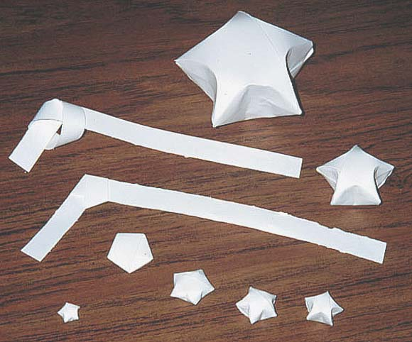
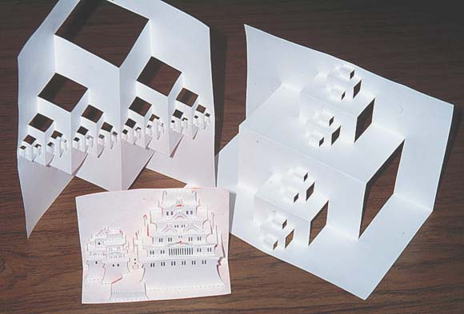
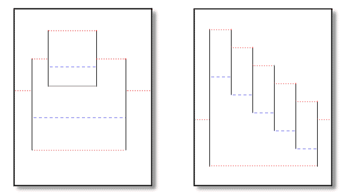
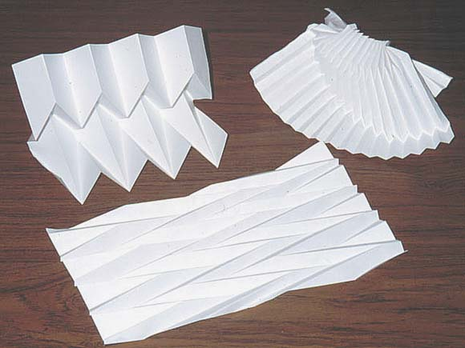
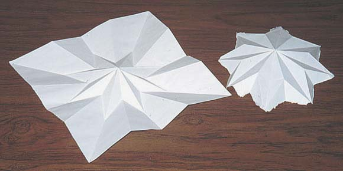
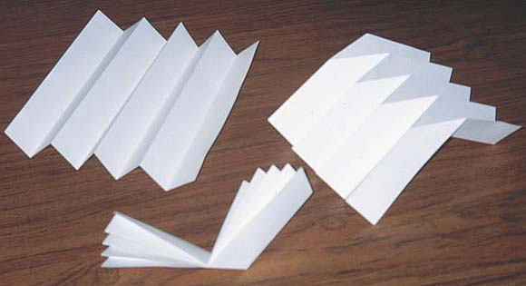

Paper fun things.
I've enjoyed
playing with paper since before I can remember.
Origami is great fun, and you can look up how to
do that with an internet search.. here is one page I like: www.origami.com
Here I have examples of
other things to do with paper. (I don't know any
real names for them, so I just call them what
they seem to be):
.oOo.
Stars

These little
things are just cute. They remind me of Lucky
Charms marshmallows =). They're easy to make, all
you need is a long strip of paper. Big one's are
okay, but the small ones are best. I made one
really big one with 16 pieces of paper all taped
together. Interesting, but not as fun as the
little ones.
Here's
how:
-Get a long
strip of paper, 1/2 an inch by 11 inches is a
very good length. Just take a piece of paper and
make a long fold, then cut along it.
-Tie the strip
of paper into a simple knot, like in the top left
one in the picture.
- Carefully
pull the knot tighter, until it's as tight as it
will get and you can squash it flat, like the
second step in the picture. This makes it into a
pentagon, which is the basic shape of our star.
Don't crease the edges down really good, just
squash it flat. (If you make the folds really
good here it won't poof up as easily later.)
- Start to
wrap the remaining paper around the knot. When
you've wrapped all the paper around tuck the last
bit underneath some of the paper on the knot,
that way no paper hangs loose. Now you've gotten
to the third step in the picture.
- Ok, now take
your thumbnail and dent in the sides of the
pentagon. This is the fourth step in the picture.
- Now keep
going around denting the sides in a little bit
more at a time. After doing that for a while you
can pinch the points out nice. Now you have a
great little star!
Thanks go
to Matt Kiener who showed me how to make these.
=)
top
.oOo.
Vertical
cut popups

I first
learned about these from the magazine Omni. The
idea is simple, make parallel cuts in only one
direction and then fold a piece of paper in half.
Only, as you fold the paper fold the strips in
different directions. The two big ones are a
simple 'binary city' pattern. It's a great
pattern, and easy to do, but there are better
things to be done with this kind of paper art.
The piece in the front is from a book I found
back in high school. It makes a little building,
very nice.
Here's
how:
I have two
simple examples to get you started. The left one
will make a simple building (two boxes, one on
top the other). The right one will make a
staircase.

- Take a piece
of paper and cut vertical cuts where you see the
vertical black lines
- Fold valleys
where you see the small red doted lines
- Fold
mountains where you see the longer blue dashed
lines.
top
.oOo.
Accordian
folds

This is a
great way to produce many interesting... things.
=) I don't know what they are. They have
interesting structural stability, if that
interests you. I saw this on TV as a simple tent
design. I then made ones more complex. Above on
the right is one with a curved meta-fold. The
middle one has the folds interleaved. Below is
the same thing, only with the accordion fold done
radially. It makes for very interesting objects (some
simpler stars shown here), but they can be very
difficult to make.

Here's
how:

- Start by
making an accordion fold along a piece of paper.
To do this fold the paper in half, then in half
again, then in half once more. Make the folds
very crisp, use your finger nail to press the
fold down on the table. Make the folds alternate
as shown in the left one in the picture. Then,
reverse all of them so that the accordion is
reversed. All the folds should be happy to fold
either way.
- Now hold the
accordion all together, and then fold the whole
thing. (This is a meta-fold.) You should now have
something looking like the paper in the middle of
the picture.
- Open it all
up, and then reverse the accordion fold on just
one side of the meta-fold. This can be tricky,
and the only think I can do it just say try it.
Make the valleys of one side become mountains,
and the mountains valleys. When you're done you
should have a piece of paper like the right one
in the picture. That zig-zag on top is the meta-fold.
top
|